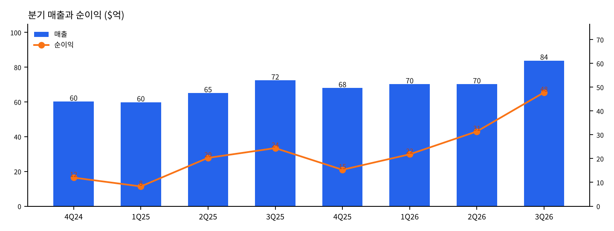
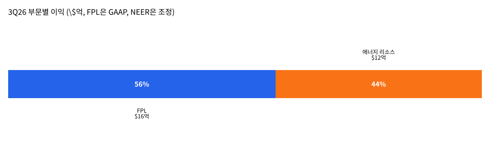
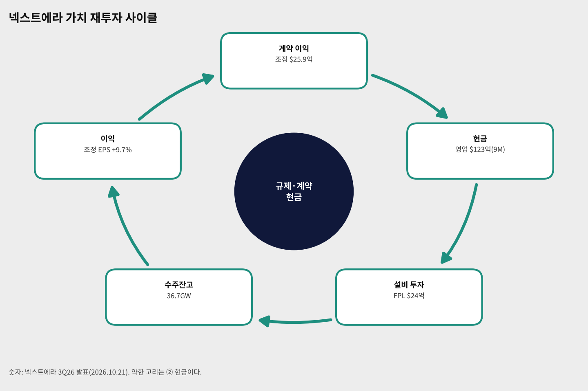

넥스트에라는 규제 요금 기반의 FPL과 재생에너지·저장 개발 자회사로 구성된다. 데이터센터 수요와 대규모 부하가 성장 동력이다.
| 항목 | 내용 |
|---|---|
| 종목 | NextEra Energy (NEE) · NYSE · 유틸리티(전력) · 플로리다 주노비치 |
| 멀티플 | PER·PEG는 조정 EPS 기준(08 항목 표) |
| 최근 분기(3Q26) | 조정 EPS $1.24, 조정 순이익 $25.9억 |
| 수주잔고 | 약 36.7GW(저장 포함) |
| 직원 수 | 약 17,400명(트레이딩뷰) |
| 직책 | 인물 | 역할·특징 |
|---|---|---|
| 회장·CEO | 존 케첨(John Ketchum) | '조정 EPS가 9.7% 늘었다'며 FPL과 NEER의 성장을 강조 |
| CFO | (확인 필요) | (이번 조사에서 확인하지 못함) |
경영 스타일: '규제 투자 + 개발 수주잔고 + 대형 합병'. 다미니언 에너지와의 합병으로 규제 자본 성장(약 11%, 2032년까지)을 목표로 한다.
풍력·태양광·배터리 저장을 대규모로 개발해 장기 계약에 연결한다.
연방 부지 허브 약 16.5GW와 원전 재가동(Duane Arnold, 2029년 1분기 목표)을 추진한다.
다음 실적발표는 세 가지 질문에 답하는 자리다.
1. 수주잔고 36.7GW가 설치로 이어지나?
2. FPL 대규모 부하(데이터센터)가 현실이 되나?
3. 다미니언 합병이 예정대로 가나?
한 줄 판정 규칙: 첫 질문(수주잔고 설치)과 둘째 질문(대규모 부하)이 이어지면 약한 고리(대규모 자본 조달)가 풀린다.
일정: 4Q26 실적 발표는 트레이딩뷰 기준 2027.01.26(확인 필요).
| 분기 | 매출 | 순이익 | EPS | 조정 EPS | 특이 사항 |
|---|---|---|---|---|---|
| 4Q24 | $60.2억 | $12.0억 | 0.58 | 0.53 | |
| 1Q25 | $59.8억 | $8.3억 | 0.40 | 0.99 | |
| 2Q25 | $65.1억 | $20.3억 | 0.98 | 1.05 | |
| 3Q25 | $72.4억 | $24.4억 | 1.18 | 1.13 | |
| 4Q25 | $68.0억 | $15.3억 | 0.73 | 0.54 | |
| 1Q26 | $70.2억 | $21.8억 | 1.04 | 1.09 | |
| 2Q26 | $70.2억 | $31.4억 | 1.50 | 1.15 | |
| 3Q26 | $83.8억 | $47.8억 | 2.28 | 1.24 | 조정 EPS $1.24(+9.7%), GAAP은 헤지 평가이익 약 $30억 포함 |
3Q26 매출 $83.8억(트레이딩뷰), GAAP 순이익 $47.8억(EPS $2.28)은 비적격 헤지 평가이익 등 약 $30억 세후 이익을 포함한다. 조정 EPS $1.24(+9.7%)(회사 발표 2026.10.21). 매출·순이익·EPS(GAAP 희석)는 트레이딩뷰 스캐너, 조정 EPS는 트레이딩뷰 실적 페이지의 Reported 값이다. 분기 정렬은 오래된 분기→최신이다.

흐름 요약: 최근 분기 매출은 $83.8억로 전년 동기 $72.4억 대비 +15.7%, 순이익은 $47.8억(전년 $24.4억)다. 최근 4분기 GAAP EPS는 $5.55, 조정 EPS는 $4.02다.
| 부문 | 내용 | 3Q26 조정 순이익 | 비고 |
|---|---|---|---|
| FPL | 플로리다 규제 전력 | $16.2억 | +10.7% |
| 에너지 리소스(NEER) | 재생·저장 개발 | $12.5억 | +13.2% |
| 기타(내 계산) | 합계 − 위 두 부문(손실) | −$2.8억 | 조정 순이익 합계 $25.9억 |

부문 합계는 FPL과 NEER이 이익을 이끌고 기타는 음수다(내 계산). 차트는 두 부문만 표시했다.
넥스트에라는 '안정적인 규제 이익과 재생에너지 성장으로 주주 가치를 키우는 것'을 목표로 한다.
| 축 | 내용 |
|---|---|
| 규제 | FPL 자본 투자 |
| 개발 | 수주잔고 36.7GW |
| 성장 | 조정 EPS 연 8%+(2032) |

| 이동평균 | 값 | 종가 대비 | 위치 |
|---|---|---|---|
| 5일선 | $84.99 | -0.2% | 종가 아래 |
| 20일선 | $84.62 | +0.2% | 종가 위 |
| 50일선 | $80.90 | +4.8% | 종가 위 |
| 100일선 | $83.62 | +1.4% | 종가 위 |
| 200일선 | $87.33 | -2.9% | 종가 아래 |
52주 고가 $98.75(2026-05-01)·저가 $74.41(2026-10-01) 범위에서 종가 $84.78는 20일선, 50일선, 100일선을 웃돌고 5일선, 200일선은 밑돈다.
| 규칙 | 기준 | 현재 값 | 신호 |
|---|---|---|---|
| 장기 추세 필터 | 종가 vs 200일선 | $84.78 < $87.33 | 매도 |
| 중장기 교차 | 50일선 vs 200일선 | $80.90 < $87.33 | 매도 |
| 단기 교차 | 20일선 vs 50일선 | $84.62 > $80.90 | 매수 |
| 돈키언 채널 | 55일 고가 $90.04 / 저가 $74.41 | 중간값 $82.22 위 | 매수 |
| 1개월 모멘텀 | 21거래일 수익률 | +7.5% (기준 $78.86) | 매수 |
| 3개월 모멘텀 | 63거래일 수익률 | -0.3% (기준 $85.03) | 매도 |
| 6개월 모멘텀 | 126거래일 수익률 | -4.0% (기준 $88.27) | 매도 |
| 12개월 모멘텀 | 252거래일 수익률 | -1.1% (기준 $85.75) | 매도 |
| 종합 (8개 평균) | -0.25 | 매도 |
해석: 매수 신호 3개(단기 교차, 돈키언 채널, 1개월 모멘텀), 매도 신호 5개(장기 추세 필터, 중장기 교차, 3개월 모멘텀, 6개월 모멘텀, 12개월 모멘텀). CTA 점수 -0.25(매도). 14일 ATR $1.82 (2.1%), 52주 고가 $98.75 · 저가 $74.41.
| 가격 | 기준 | 무엇이 바뀌나 |
|---|---|---|
| $90.04 | 55일 고가 | 돌파 시 채널 상단 갱신 |
| $88.27 | 6개월 모멘텀 기준가 | 종가가 이 가격 위면 6개월 신호 매수 |
| $87.33 | 200일선 | 종가가 이 선 위/아래인지로 장기 추세 신호가 바뀜 |
| $85.75 | 12개월 모멘텀 기준가 | 종가가 이 가격 위면 12개월 신호 매수 |
| $85.03 | 3개월 모멘텀 기준가 | 종가가 이 가격 위면 3개월 신호 매수 |
| $82.22 | 돈키언 중간값 | 55일 채널 중간값 위/아래로 신호가 바뀜 |
| $78.86 | 1개월 모멘텀 기준가 | 종가가 이 가격 위면 1개월 신호 매수 |
| $74.41 | 55일 저가 | 이탈 시 채널 하단 갱신 |
가격 수준은 신호가 바뀌는 기준선일 뿐 진입·청산 가격 제안이 아니다. 20일/50일 교차는 이동평균 자체가 움직여 단일 가격으로 표시하지 않았다. 일봉·주봉은 종가 기준 직접 계산(고저 데이터 미사용)이다.
| 악재 요인 | 내용 | 강도 |
|---|---|---|
| 대규모 자본 지출 | 9개월 투자 현금흐름 −$270억 | 중간 |
| GAAP 변동성 | 헤지 평가손익으로 GAAP EPS 요동 | 중간 |
| 매출 미달 | 3Q 매출 컨센서스 하회 | 참고 |
| 합병 불확실성 | 다미니언 합병 승인·통합 | 중간 |
| 티커 | 회사 | PER(TTM) | PEG | P/S | EPS 성장(YoY) |
|---|---|---|---|---|---|
| NEE | 넥스트에라 에너지 | 21.1배 | 2.44 | 6.09배 | +9% |
| SO | 서던 | 21.6배 | 2.51 | 3.48배 | +9% |
| DUK | 듀크 에너지 | 19.0배 | 2.49 | 3.00배 | +8% |
| AEP | AEP | 20.7배 | – | 2.95배 | -10% |
비교 결론: 넥스트에라 PER은 서던과 듀크보다 낮은 구간이다.
넥스트에라는 9개월 영업현금흐름 $123억으로 투자 $270억을 일부만 충당한다.
| 지표 | 값 | 출처 | 해석 |
|---|---|---|---|
| 현금·단기투자 | $59억 | 트레이딩뷰 스캐너(최근 분기) | |
| 총부채 | $1,139억 | 트레이딩뷰 스캐너(최근 분기) | |
| 순부채(부채−현금) | $1,080억 | 내 계산 | 현금 대비 부채 부담 |
| 잉여현금흐름(TTM) | $41억 | 트레이딩뷰 스캐너 | |
| TTM 매출 | $292억 | 트레이딩뷰 스캐너 |
| 기준 | 매출 | P/S | 비고 |
|---|---|---|---|
| 내 계산(종가 ÷ 최근 4분기 매출 합계) | $292.2억 | 6.09배 | 시총은 정렬용 데이터에서만 사용 |
| 동종(트레이딩뷰) | – | SO 3.48배 · DUK 3.00배 · AEP 2.95배 | 11.19 |
해석: P/S 6.06배는 서던(3.48배)보다 높다.
EBITDA는 영업활동의 현금 창출력을 보는 지표이고, PEG는 PER을 EPS 성장률로 나눈 값이다. EBITDA·FCF는 트레이딩뷰 TTM 값이다.
| 지표 | 값 | 산출 |
|---|---|---|
| EBITDA(TTM) | $156억 | 트레이딩뷰 스캐너 |
| EBITDA 마진 | 53.4% | EBITDA ÷ TTM 매출(내 계산) |
| FCF 마진 | 14.0% | FCF ÷ TTM 매출(내 계산) |
| PER(GAAP TTM) | 15.3배 | $84.78 ÷ $5.55 |
| PER(조정 TTM) | 21.1배 | $84.78 ÷ $4.02 |
| 방식 | PER | EPS 성장률 | PEG | 판정 |
|---|---|---|---|---|
| 조정 EPS (TTM $4.02) | 21.1배 | +9% ($3.70 → $4.02) | 2.44 | 기준 초과 |
| GAAP EPS (TTM $5.55) | 15.3배 | +77% ($3.14 → $5.55) | 0.20 | 적극 매수 |
판정: 조정 EPS 기준 PEG 2.44 → 1.0 초과 PEG 기준은 1.0 이하 투자 적격, 0.5 이하 적극 매수다. EPS 성장률은 최근 4분기 EPS 합계를 직전 4분기 합계와 비교한 값(내 계산)이고, 일회성 항목이 있으면 조정 EPS 행을 함께 본다.

넥스트에라의 사이클은 규제·계약 이익 → 현금 → 설비 투자 → 수주잔고 → 이익이다.
| 고리 | 현재 숫자 | 고리 강도 | 약해지는 신호 |
|---|---|---|---|
| ① 규제·계약 이익 | 조정 순이익 $25.9억(+10%) | 강함 | 금리 |
| ② 현금 | 9개월 영업현금 $123억 | 보통 | 자본 지출 |
| ③ 설비 투자 | FPL 분기 $24억 | 강함 | 조달 |
| ④ 수주잔고 | 약 36.7GW | 강함 | 설치 지연 |
| ⑤ 이익 성장 | 조정 EPS 연 8%+ | 강함 | 합병 |
사이클의 특징: 가장 약한 곳은 ② 현금이다. 영업현금이 투자 현금보다 작다.